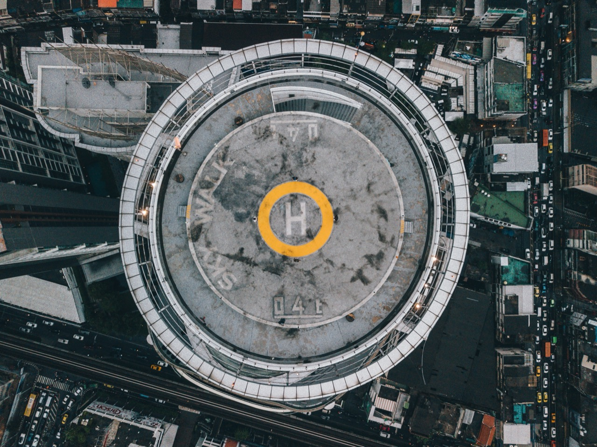
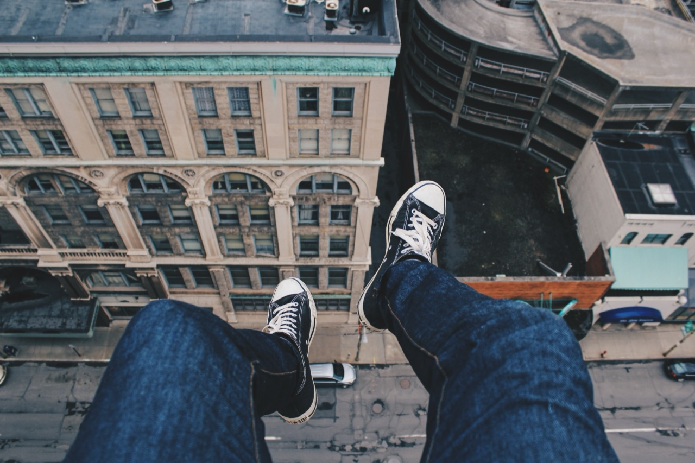
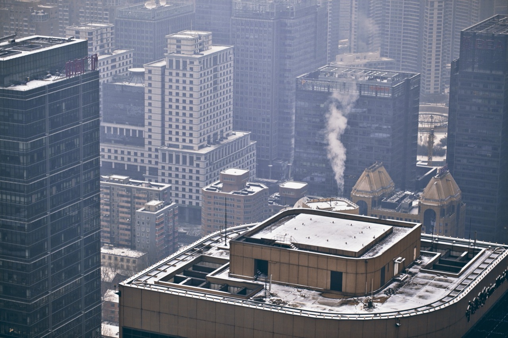
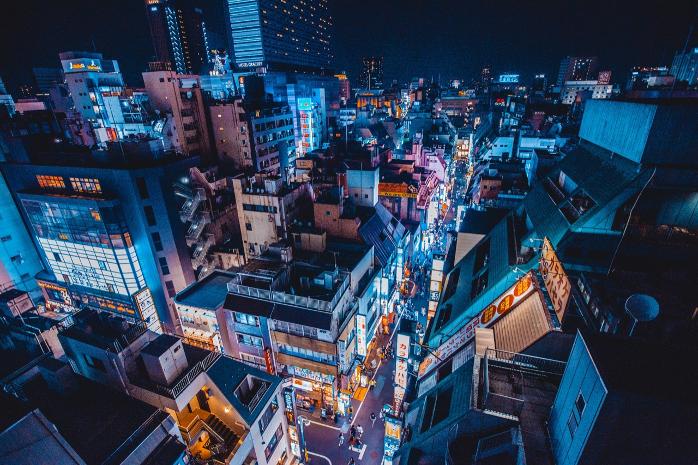

In the distinctive visual landscape of contemporary digital wallpaper collections, rooftop imagery occupies a compelling niche combining urban aesthetics, architectural interest, and atmospheric potential. Images of rooftops—the often-hidden upper surfaces of buildings visible primarily from elevated vantage points or aerial perspectives—offer visual possibilities quite distinct from ground-level urban photography. Rooftop wallpapers have emerged as increasingly popular aesthetic category appealing to those drawn to urban environments, architectural forms, geometric compositions, and the particular atmospheric qualities visible from elevated urban vantage points. The category represents intersection of architectural documentation, landscape photography, and contemporary digital aesthetic sensibilities.
The technical and compositional possibilities of rooftop photography reflect the particular visual characteristics of these spaces. From ground level, rooftops remain largely invisible except in glimpses and fragments. Elevated perspectives—whether from adjacent buildings, aircraft, drones, or helicopter photography—reveal rooftop environments fully. The geometric forms created by multiple rooflines, the varied architectural treatments of different building surfaces, the textures created by roofing materials, weather damage, and age all become visible in ways impossible from ground level. The aerial perspective creates distinctive compositional possibilities emphasizing geometric relationships, patterns, and spatial complexity.
The color and textural characteristics of urban rooftops vary considerably depending on architectural style, age, climate, and maintenance. Older urban neighborhoods feature diverse roofing materials—slate, clay tile, various metals, tar and gravel—creating varied chromatic effects. Contemporary buildings often employ industrial roofing materials—metallic surfaces, rubber membranes, concrete—creating more uniform but visually distinctive surfaces. Weather patterns create textures and colorations reflecting precipitation, wind patterns, temperature cycles. The visual richness of actual rooftop surfaces provides abundant source material for photography and digital art.

The aerial perspective essential to accessing rooftop imagery has been revolutionized by drone photography and digital imaging technology. Historically, rooftop imagery required expensive helicopter photography or access to specialized high-altitude vantage points. Contemporary drone technology allows photographers to capture detailed rooftop imagery with relatively modest equipment and cost. This technological democratization has expanded the possibility space for rooftop documentation, enabling more photographers and artists to create rooftop imagery. The resulting proliferation of rooftop photographs contributes to the category's growing prominence within digital wallpaper collections.
The geographic diversity of urban rooftops contributes visual and conceptual richness to rooftop wallpaper collections. Dense urban centers with tall buildings create dramatic architectural compositions and complex layering of rooflines. Sprawling urban areas with lower-rise construction feature different visual characteristics emphasizing repetitive patterns and horizontal relationships. Historic city centers with architectural traditions spanning centuries feature roofline diversity reflecting varied periods of construction and architectural styles. Developing cities with rapidly transforming skylines document ongoing urban change. This geographic diversity ensures visual novelty and varied aesthetic possibilities within the rooftop wallpaper category.
The compositional strategies employed in rooftop photography significantly affect visual impact and aesthetic effectiveness. Wide aerial perspectives emphasizing urban extent create dramatic compositions showing the vast scale of built environments. Closer aerial framing reveals architectural detail and roofing material characteristics. Angled perspectives create dynamic compositions emphasizing spatial relationships and roofline geometry. Color-focused compositions emphasize the chromatic variety visible in rooftop environments. These varied compositional approaches enable photographers to explore diverse visual languages within rooftop subject matter.

The cultural and aesthetic dimensions of rooftop imagery reflect broader urban sensibilities and values. Interest in rooftop aesthetics suggests appreciation for the built environment, interest in architecture, and comfort with technological mediation of perspective (drones, aircraft enable viewpoints unavailable from human ground position). Rooftop imagery appeals to those drawn to geometric forms, abstract patterns, and the distinctive visual language of urban built environments. The popularity of rooftop wallpapers reflects broader cultural appreciation for urban aesthetics and visual complexity of contemporary cities.
The atmospheric and environmental dimensions of rooftop imagery add layers of visual and emotional complexity. Weather conditions visible in rooftop imagery—clouds, rain patterns, atmospheric phenomena—interact with architectural forms to create distinctive visual effects. Time-of-day variations alter rooftop appearance dramatically as sunlight angles change and shadows shift. Seasonal variations affect vegetation, snow coverage, or other elements visible on rooftop surfaces. These environmental variations create opportunities for capturing rooftop imagery displaying diverse atmospheric conditions and seasonal characteristics.
The relationship between rooftop imagery and broader urban documentation traditions deserves consideration. Urban photography has long celebrated the distinctive visual characteristics of cities. Street-level urban photography documents human activity and architectural facades. Rooftop photography reveals dimensions of cities normally invisible to pedestrians, opening perspectives and visual languages unavailable from ground level. This elevation of perspective represents distinctive contribution to urban visual culture, providing ways of seeing familiar cities that shift perception and reveal previously hidden visual dimensions.
The intersection of rooftop imagery with contemporary digital culture and social media aesthetics contributes to the category's growing prominence. Instagram and similar visual platforms emphasize striking visual compositions and distinctive perspectives. Rooftop imagery often delivers the kind of visually distinctive and appealing content that performs well on visual social platforms. The sharing and circulation of rooftop imagery through social media has expanded awareness and appreciation of the category, driving increased interest in acquiring rooftop wallpapers.

The environmental and sustainability implications of urban rooftops deserve attention. Rooftop spaces represent opportunities for green infrastructure, solar energy generation, and ecological habitat within otherwise impervious urban environments. The visual documentation of rooftops through photography raises awareness of these spaces and their potential uses. Wallpaper imagery celebrating rooftop aesthetic might indirectly support broader interest in rooftop utilization for environmental benefits. Alternatively, the aesthetic appreciation of existing rooftop conditions might simply celebrate current conditions without necessarily advancing environmental outcomes.
The technical achievement of contemporary rooftop photography reflects sophisticated understanding of aerial photography, digital rendering, and composition. Professional photographers working with drones and aerial platforms understand how to capture compelling compositions at various altitudes and angles. Post-processing techniques enhance color, contrast, and visual impact while maintaining natural appearance. The technical sophistication underlying apparently simple landscape photography deserves recognition and appreciation.
The market demand for rooftop wallpapers reflects sustained interest in urban imagery and aerial perspectives within digital wallpaper collections. Designers and content creators seek quality rooftop imagery for varied applications. Individuals personalizing digital devices with rooftop wallpapers express aesthetic preferences and urban sensibilities. This sustained demand supports continued production of new rooftop imagery and encourages photographers and digital artists to explore fresh approaches and novel documentation of rooftop environments.

The representation of diverse global cities in rooftop wallpaper collections enables visual engagement with urban environments across geographic and cultural contexts. Viewers can explore rooftop aesthetics of cities they may never personally visit, expanding visual literacy regarding global urban diversity. This representation potentially increases appreciation for diverse urban environments while potentially sanitizing or aestheticizing cities that viewers have no direct relationship to.
The temporal dimensions of rooftop imagery merit consideration. Photographs capture rooftops at specific moments, documenting conditions at particular times. The visible evidence of weather, wear, and aging in rooftop surfaces preserves records of environmental conditions and urban change. Future viewers might regard contemporary rooftop photography as valuable documentation of urban conditions at particular historical moments. In this sense, rooftop wallpaper collections contribute to visual archives documenting urban environments as they exist in contemporary contexts.
The philosophical dimensions of elevated perspective and aerial vision represented in rooftop imagery extend beyond aesthetics into broader cultural meanings. The ability to see cities from above—from perspectives unavailable to pedestrians—represents distinctive characteristic of contemporary technological culture. Drone photography and aerial imagery have become increasingly commonplace, shifting how people visualize and understand familiar places. Rooftop wallpapers contribute to this broader cultural shift toward elevated and distanced perspectives on familiar environments.
The ongoing evolution of rooftop wallpaper aesthetics reflects technological developments and shifting design sensibilities. Improved drone capabilities enable higher resolution and more sophisticated aerial imagery. Processing techniques continue to become more sophisticated. The category appears likely to maintain cultural relevance and visual interest as drone technology continues advancing and artists continue exploring possibilities within rooftop and aerial photography. The future of rooftop wallpapers seems likely to involve continued evolution and expansion as technologies and sensibilities develop. The category represents significant and evolving component of contemporary digital visual culture.